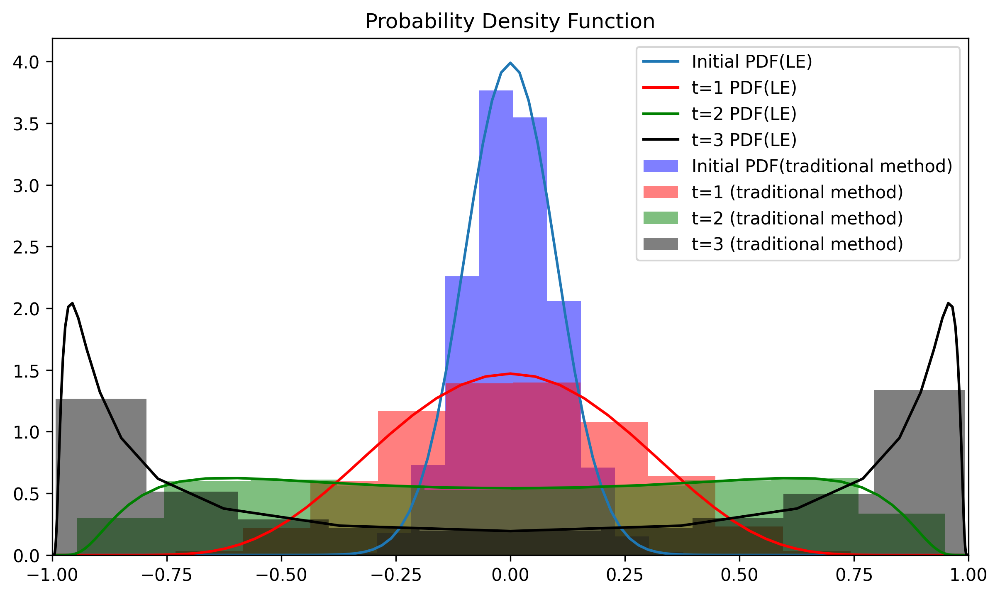
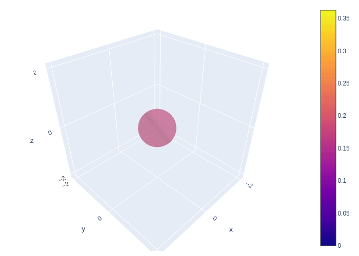

Week 6: The connection between statistical mechanics and ensemble forecast II: Applications#
Connections between Liouville equation (LE) and ensemble forecasts#
Last week, we learned the physical meaning of Jacobian matrix, determinant and LE. This week, we will walk through a few of their applications. Before we introduce the examples, we need to know there are two equivalent formulas of LE: (1) initial state-based LE and (2) current state-based LE. One easy way to distinguish these two is looking at how (44) is defined.
First, let’s consider a dynamical system with first-order derivative.
In the initial state-based method, the LE is only a function of initial state and time. Physically, we can know how a dynamical system evolves with time as long as we know its initial states and time for integration. i.e.,
where \(\Xi\) is the initial state and \(t\) represent the number of time steps we integrate forward. Then the determinant of the Jacobian matrix, which exerts on the initial condition can be written as
While the dynamical system is deterministic, we can also find an 1-on-1 bijection between \(\mathbf{\Xi}\) and \(\mathbf{X}\) at a given t. i.e.,
The existence of 1-on-1 bijection enables us to rewrite the prognostic equation of \(\alpha\) ((47)) i.e., replace \(\mathrm{\Xi}\) with \(\mathrm{X}\)
compare (54) to the initial state-based LE (similar to (47))
By observing (54) and (55), it’s not hard to find their analogies in equations of fluid dynamics. (54) is similar to so-called Eluerian form (i.e., observing the system at a fixed point), while (55) is similar to Lagrangian form (i.e, observers following the particle). This is also the reason why it’s called “particle flow”.
To illustrative the mathematical equivalence between (54) and (55), we use a Riccati equation (i.e., equation with form of \(x^{'}=P(t)x^2+Q(t)x+R(t)\)) to test (54) and (55)
the analytical solution is
where \(\Xi\) is the initial condition and \(t\) is time of integration. According to (52), we can find the initial state as a function of current state.
The Jacobian as a function of initial state can be written as,
and the Jacobian as a function of current state can be written as,
Now, let’s substitute \(\alpha(\Xi,t)\) in (54) with (59) and \(\alpha(X,t)\) in (55) with (60), which will give us
We can replace the right-hand-side of the second equation in (61) with (57). Then we can find the first and second equations are mathematically equivalent.
Note
(51) leads to a very interesting debate in science, “Laplace demon theory”. Laplace demon theory describes that if there is an intellect who knows the “specific location of every element particle in the universe”, it will know the past as well as the future of the entire universe given (51) is deterministic. For example, every decision made by you and me can be considered as result of chemical reaction (i.e., the moving of electrons) in your brain. However, the discovery of uncertainty principle in 1927 protects us from having such demon.
In weather forecast, there is always some uncertainty since we can never have infinite small-scale observation.
Solution of the Liouville equation#
Different from finding the solution of a dynamical system, the analytical solution of LE is relatively simple and interpretable. We can divide both side of (57) by \(\alpha\) and integrate over \(t\) dimension, which gives us,
which further leads to
or in density form
If we still remember what we leaned in week1, (63) and (6) have exact the same formula. The only difference is, we leverage Taylor expansion to linearize the dynamical system while this week (and last week), we use Jacobian matrix to map the initial states to the final states.
Liouville equation in 1st-order ODE case#
Here we use a simple ODE along with a python code showing how to implement LE in a forecast problem.
Before we solve this ODE, we can take a look of its dynamical behavior. From (64), one can easily find that it has three equilibrium point: -1, 0 ,1. At these three equilibrium points, \(\frac{d}{dt}\) equals 0, indicating there is no acceleration. However, among these points, two of them are stable equilibrium points and the other one is unstable equilibrium point.
The analytical solution of (64) can be written as (brainstorming…)
where \(\Xi\) is the initial state and \(t\) is the time for integration. We can test if (56) is the solution of the differential equation (64) by substitute \(t\) with \(\infty\), which give us \(x(\Xi,t) \rightarrow \pm 1\). This is consistent with the analytical analysis.
On the other hand, (64) also leads to
. by substituting (67) into (64), we can have
Now, we can compare the probabilistic forecast generated by LE as well as the traditional forecast method. For the LE-based method, we can use numerical integration to approach the analytical solution:
def PDF(x,mu,std):
return stats.norm(mu, std).pdf(x)
rho = PDF(x,mu,std)
# x = location, rho = density in given location, n_step = number of time step, t_size = size of each step
def LE_method(x,rho,n_step,t_size):
for count in range(n_step): # forward for 1 time steps
xi = x
xint = 0
for i in np.arange(0,1000,1):
tp = i*t_size/1000
x = xi*np.exp(tp)*(1-xi*xi+xi*xi*np.exp(2*tp))**(-1/2)
c = 1-3*x*x
xint += c
rho = rho*np.exp(-xint*t_size/1000)
rho = rho/np.trapz(rho,x)
return x,rho
For traditional method, we initialized model with 10000 normally distributed random points and integrate them forward in time. The comparison is shown below.

Fig. 13 The intercomparison between traditional probabilistic forecast method (bar) vs LE-based method.#
The LE-based method only used 200 data points (for the purpose of visualization) while the traditional method took 10000 scenarios to get similar answers, suggesting the LE-based method is 50 times more efficient than the traditional ensemble forecast method.
Liouville equation in Lorenz 63 model (Lorenz 84 model as HW)#
We can also apply LE-based method to much higher dimension, such as Lorenz 84 model. Lorenz 84 model is a more complicated version of Lorenz 63 model (, which is also a simplification of 2D convection problem).
or in a matrix form
To apply the LE-based method to the Lorenz 63 model, we first linearize the equation to simplify the problem given that the error growth rate is only the sum of its diagonal elements. (we will talk about the off-diagonal element in the chapters of generalized instability problem).
and the corresponding \(\sum_{i}\frac{\partial \Phi_i(\mathbf{X},t)}{\partial \mathbf{X}}\) is
Interestingly, we can find the error growth (i.e., decaying of \(\rho\)) is independent of location and this seems counter-intuitive? Lorenz 63 system is well-designed model, where each component has a constant error growth rate. However, it doesn’t mean the PDF will stay Gaussian given that each member are moving around within a nonlinear system. Physically, ensemble members are something like particles carrying different amount of electric charges (probability density). Thus, even each member has similar shape of PDF (Gaussian), their superimposition in phase space are not necessary Gaussian.
The animation below shows the LE-based method of probabilistic forecast for Lorenz 63 model. We can find that the system goes through a stage of linear error growth first (stretching along y-axis). At the later stage, we can find the regions with higher probability are concentrated around two attractors. This feature is generally consistent with our finding.

Fig. 14 Using LE-based method of generating probabilistic forecast in Lorenz 63 model.#
Note
In the homework assignment, you will practice how to apply the LE-based method to Lorenz 84 model ((73)). Different from the Lorenz 63 model, the convergence/divergence of \(\Phi_i(\mathbf{X},t)\) is state-dependent (a function of location). This indicates that the probability density carried by each member might experience nonlinear decaying/growth when it is moving around inside the dynamical system.
Challengs of applying Liouville Equation to weather forecast#
One can find LE is a powerful tool for generating the probabilistic forecast. However, one fundamental problem of implementing LE to a dynamical system is that the ultra-high dimension of weather forecast model makes finding the analytical solution impossible.
Given the existing challenge of applying LE to a weather forecast model. Singular Value decomposition (or mathematically equivalent to Principal component analysis) was introduced to the field of data assimilation to subtract the dominant information in a data set. Mathematically, it find a few orthogonal components, which maximize the observed variance. Thus, after we apply to SVD to a given data, we can efficiently compress the data and reduce the data dimension. We will cover more details in the following few weeks.